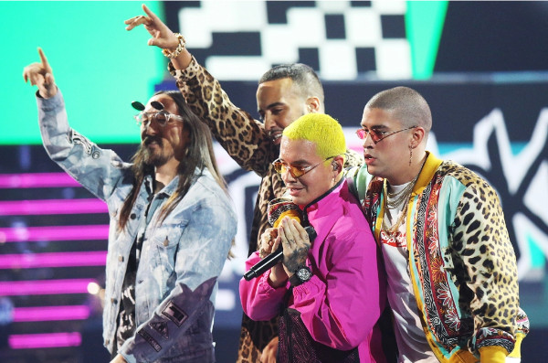

Un verano sin ti
Released May 2022
Features:
- Chencho Corleone, Puerto Rican reggaeton duo
- Jhay Cortez, Puerto Rican singer & rapper
- Rauw Alejandro, Puerto Rican singer & songwriter
Un Verano Sin Ti ("A Summer Without You") is the fourth solo studio album, and fifth overall, by Puerto Rican rapper and singer Bad Bunny. It was released on May 6, 2022, by Rimas Entertainment following the release of his previous record El Último Tour Del Mundo (2020). Comprising twenty-three tracks, the album is primarily a reggaeton, cumbia and indie pop record.


Songs
- Moscow Mule
- Un Ratito
- Tarot
- Neverita
- Efecto
- Aguacero
Rappers
- Chencho
- Jhay
- Alejandro
- Bomba
- Buscabulla
- Un Verano Sin Ti debuted atop the US Billboard 200, marking Bad Bunny's second number-one album
- With the sun-kissed Un Verano Sin Ti, Bad Bunny continues to proudly give pop music some much-needed flavor, swagger, and sounds by way of the Caribbean.
- Darwin Cordale Quinn, producer
- According to the magazine Hits, Un Verano Sin Ti sold 2.3 million units as of September 2022.